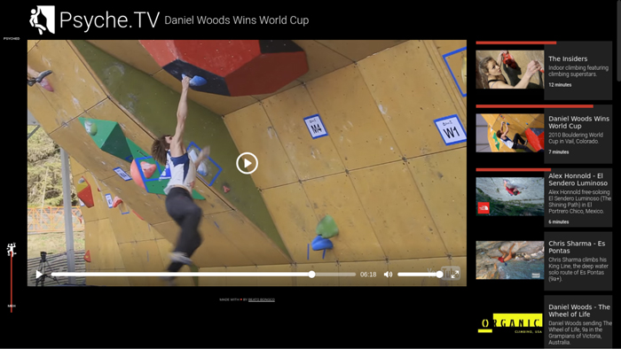
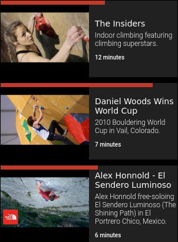
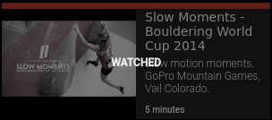
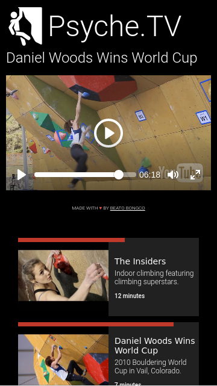

This kata is special because it was inspired by something unrelated to tech or design: climbing!
Psyche.TV is a smart playlist of climbing videos to get your psyche on! It remembers which videos you've watched and where you stopped watching so the next time you visit you can simply pick up where you left off. And best of all, it's all client-side. I don't store any of your data.
You can test out the live version at https://beatobongco.com/Psyche.TV/.
Check out sidebar on the right. Each of the cards have red bars. They represent how much you've watched of each video and update without need of refresh.
Once you've finished a video, it marks itself as "watched".
If you check out the left side of the video, you'll see a little vertical meter. I call it the "Psyche Meter". The tiny climber climbs higher the more videos you watch. Help him reach the top by watching them all and getting totally psyched!
Also, it's mobile friendly. I really like responsive design so I strive to make all my projects, small or large, look good on phones. I had to sacrifice the Psyche Meter though, as I didn't want to reduce the already limited real-estate on most phones.
I made this because I keep a list of climbing videos I like that I want to share to others. However, I think just linking them to a Google doc is plain boring. I thought about making a YouTube playlist but a couple of the videos are hosted on Vimeo so no dice. The last option I thought about was making a Facebook page but its kinda meh because it would be a hassle to get people to like it and I'd have to waste time managing it.
So I thought, why not have a little practice and create a little shareable gallery? And so Psyche.TV was born.
I used this nifty open-source media player called Plyr which allows me to control YouTube and Vimeo videos, add event listeners and get information about playback without having to muck through their API's. I did notice that sometimes there are a few hiccups when rendering Vimeo videos though.
I thought about using React for the UI but I didn't want to bother with the tooling and boilerplate so I used Vue.js which provides a more chill way to design reactive components. I really dig the simple and intuitive API. I will probably be using this on future projects as well.
I store user data in their browser. I used Mozilla's localForage because it has a really simple API and it supports Promises.
I used a couple more small libraries but I don't think they're worth expounding upon. If you want to check out my code it's all public on my Github.
I had a blast making this. I hope you get a kick out of using it too. It's really tiny projects like this that make me smile and remind me why I got into programming in the first place.